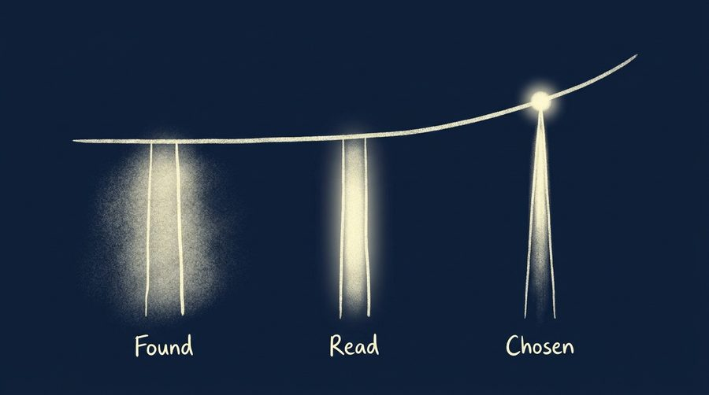
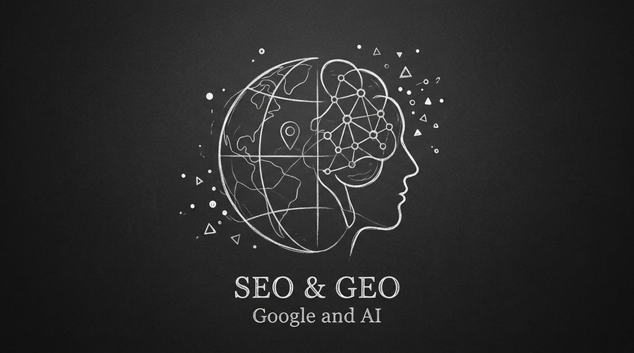

Une personne qui finit par vous écrire, réserver une place ou faire un don a franchi trois étapes avant d'y arriver. Elle vous a trouvé, elle vous a lu, elle vous a choisi. Ces trois moments se suivent dans un ordre fixe, et chacun relève d'un métier différent : le référencement pour le premier, la rédaction pour le deuxième, le design d'interface pour le troisième.
Les traiter séparément donne trois chantiers qui progressent sans se parler. Les traiter ensemble demande de savoir lequel des trois freine réellement le résultat, à un moment donné. C'est presque toujours un seul des trois.
1. Trois moments, trois métiers
Le parcours se découpe proprement, parce que chaque étape a sa propre condition de réussite et sa propre mesure.
Être trouvé
Apparaître quand quelqu'un cherche, sur Google comme dans les réponses des IA.
Se mesure en impressions, positions et citations.
Être lu
Retenir l'attention une fois la page ouverte, et donner envie d'aller plus loin.
Se mesure en temps passé, profondeur de lecture, taux de clic.
Être choisi
Rendre le passage à l'acte simple, lisible et rassurant.
Se mesure en taux de conversion et taux d'abandon.
Un même visiteur peut échouer à n'importe laquelle de ces trois marches, et le symptôme visible reste le même dans les trois cas : peu de contacts, peu de réservations, peu de dons. D'où l'intérêt de savoir à quelle marche il trébuche.
2. Être trouvé : la porte d'entrée s'est dédoublée
Pendant vingt ans, être trouvé voulait dire figurer dans les résultats de Google. Cette porte reste la principale, et elle a ses règles propres selon le type de recherche. Pour une structure ancrée dans un territoire, la proximité pèse lourd : 46 % des recherches Google ont une intention locale, ce qui déplace le travail vers la fiche d'établissement, les avis et les signaux de localisation plus que vers le site lui-même. C'est le sujet du SEO local et de la façon de dominer les recherches de proximité.

La seconde porte est plus récente. ChatGPT, Perplexity et les résumés générés en tête des résultats répondent de plus en plus souvent à la place du site. Le trafic qui en sort est faible en volume et remarquable en qualité : en analysant son propre trafic, Ahrefs a mesuré que les visiteurs venus de la recherche IA représentaient 0,5 % du total mais 12,1 % des inscriptions, un ratio de conversion environ vingt-quatre fois supérieur à celui de la recherche organique classique. Le travail consiste alors à devenir une source que ces moteurs citent, ce que détaille l'article sur le SEO et le GEO côte à côte.
le rapport entre le taux de conversion des visiteurs venus d'une IA et celui de la recherche organique classique, sur le trafic analysé par Ahrefs.
Source : Ahrefs, « Does AI Search Traffic Convert Better Than Traditional Search? » (2025)
3. Être lu : gagner les secondes suivantes
Une fois la page ouverte, la question change. Le visiteur n'est plus en train de chercher, il est en train de décider s'il reste. Ce qui se joue là tient à la forme du texte autant qu'à son contenu.
La mémoire humaine tranche assez nettement entre les deux registres disponibles. Dans les travaux repris par Chip et Dan Heath à partir d'une expérience menée à Stanford, une information transmise sous forme d'histoire était retenue par 63 % des participants, contre 5 % pour une statistique présentée seule. C'est ce qui rend un récit plus efficace qu'une liste d'arguments, à condition qu'il reste juste : l'article sur le storytelling de marque sans sonner creux décrit comment en trouver un qui tienne.
se souviennent d'une information racontée sous forme d'histoire.
s'en souviennent quand elle est présentée comme une statistique isolée.
Le même pilier couvre les formats où la lecture se mérite encore davantage. Une newsletter arrive dans une boîte déjà pleine et dispose de quelques secondes pour justifier son ouverture, puis de quelques lignes pour tenir la promesse de son objet. La structure y compte autant que le style, comme le montre la méthode AIDA appliquée à des newsletters culturelles.
4. Être choisi : le dernier écran décide
Le troisième pilier commence au moment où le visiteur est déjà convaincu. Il veut réserver, écrire, donner. Tout ce qui se dresse entre cette intention et sa réalisation coûte des conversions, et les ordres de grandeur sont élevés : selon les études rassemblées sur les formulaires de don, entre 60 et 83 % d'entre eux sont abandonnés en cours de route.
Le détail des causes est instructif, parce qu'il touche à des décisions de design très concrètes : le nombre d'étapes, le nombre de champs, la place des signaux de confiance, le comportement sur mobile. L'article sur les tunnels de don et la friction reprend ces mesures une par une.
Une part de cette décision se joue même avant que le visiteur ait lu quoi que ce soit. Les travaux de Gitte Lindgaard ont montré qu'un jugement d'attrait visuel se forme en 50 millisecondes et reste stable ensuite, ce qui donne à la sobriété d'une interface un rôle direct dans la confiance accordée. C'est le propos de l'article sur la sobriété visuelle comme signal de confiance.
5. Le plus faible des trois fixe le résultat
Les trois piliers se multiplient plutôt qu'ils ne s'additionnent. Un excellent référencement qui amène des visiteurs sur une page illisible produit du trafic sans résultat. Un texte remarquable que personne ne trouve reste sans lecteur. Un tunnel de don parfait ne sert à rien si la page qui le précède n'a convaincu personne.
Cette dépendance a une conséquence pratique : l'effort supplémentaire rapporte le plus là où le niveau actuel est le plus bas. Doubler la visibilité d'un site dont le formulaire perd huit visiteurs sur dix revient à doubler le nombre de personnes qui abandonnent. Corriger d'abord le formulaire, puis augmenter la visibilité, produit un résultat très différent avec le même travail.
Le test en trois questions
- Combien de personnes voient votre page dans les résultats de recherche chaque mois ? Si le chiffre est bas, le frein est au pilier 1.
- Parmi celles qui arrivent, combien restent au-delà de quelques secondes ? Si elles repartent aussitôt, le frein est au pilier 2.
- Parmi celles qui restent et commencent une action, combien la terminent ? Si l'écart est large, le frein est au pilier 3.
Les trois chiffres se lisent dans Google Search Console et dans n'importe quel outil d'analyse d'audience.
6. Par où commencer
L'ordre de lecture des trois piliers suit le parcours du visiteur, mais l'ordre des travaux suit une autre logique : on commence par la marche la plus basse. Dans la pratique, c'est souvent la troisième, parce qu'elle est la moins visible. Une page de don ou un formulaire de contact se teste rarement, alors qu'un mauvais positionnement dans Google se remarque tout de suite.
Le diagnostic tient en une séance : relever les trois chiffres du test ci-dessus, les comparer aux repères disponibles pour le secteur, puis n'ouvrir qu'un seul chantier. Les deux autres attendront leur tour, avec de meilleurs résultats une fois le premier réglé.
Petit glossaire
- SEO
- Optimisation pour les moteurs de recherche : l'ensemble des travaux qui améliorent la position d'une page dans les résultats de Google et de ses équivalents.
- GEO
- Optimisation pour les moteurs génératifs : rendre un contenu citable et résumable par ChatGPT, Perplexity ou les résumés générés de Google.
- Taux de conversion
- La part des visiteurs qui accomplissent l'action visée (contact, réservation, don) sur le nombre total de visiteurs.
- Friction
- Tout ce qui ralentit ou décourage un visiteur entre son intention et son action : un champ de trop, une étape peu claire, un temps de chargement.
- Google Search Console
- Outil gratuit de Google qui indique les requêtes sur lesquelles un site apparaît, ses positions, ses impressions et ses clics.
Questions fréquentes
Faut-il vraiment traiter les trois piliers, ou peut-on n'en travailler qu'un ?
Combien de temps avant de voir des effets ?
Le GEO remplace-t-il le SEO ?
Ces trois piliers valent-ils pour une petite structure ?
Lequel des trois vous freine aujourd'hui ?
Diagnostic des trois piliers, puis un plan de travail sur celui qui limite vos résultats.
Démarrer un projetSources
- Ahrefs — « Does AI Search Traffic Convert Better Than Traditional Search? » (2025).
- Lindgaard, Fernandes, Dudek & Brown — « Attention web designers: you have 50 milliseconds... », Behaviour & Information Technology (2006).
- Chip Heath & Dan Heath — « Made to Stick » (2007), étude Stanford sur la mémorisation.
- SeoProfy — « 75 Local SEO Statistics ».
- iDonate — « Nonprofit Donation Page Basics » et « 2025 M+R Benchmarks: What Nonprofits Must Know ».